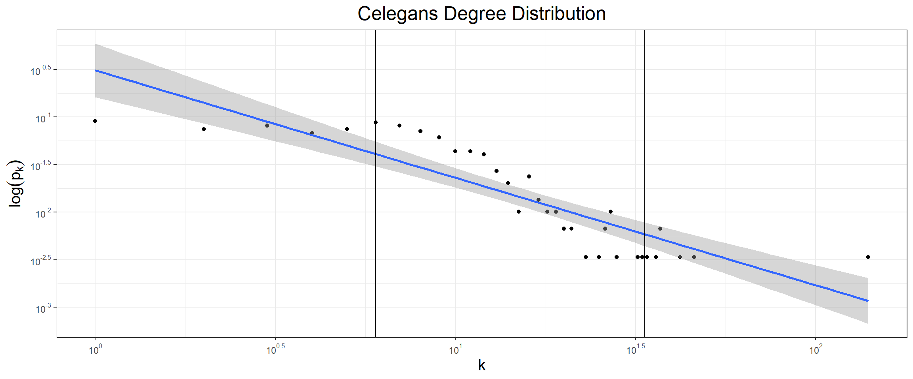
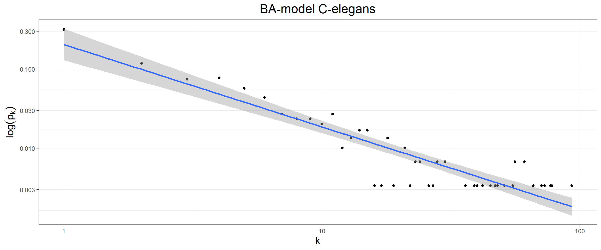

Midterm Exam
Analysis of Social Media
Prof. Dr. Juanjo Manjarín
19th, October 2020
Student Name: ……………………………….
1 Instructions
Read these instructions carefully and follow them during your exam and in your submission.
- You have 1 hour and 20 minutes to complete the exam
- Once you have finished it you must upload it to the campus online in Assignment -> Midterm Exam
- The files accepted (in order of preference) for submission are:
- The
pdforhtmlversion of your notebook (note that the heading only includes anhtmloutput). - An R notebook
.Rmd
- The
- Note that the professor should not have to run you codes to understand if a question is rigth or wrong. Therefore if you have made a chunk code that does not run, use the
eval = FALSEflag and go on. - Full marks require full explanations. Just answering the question is not enough, for example, if one answer is that the type of data is panel data, saying only that will not grant you more than the 15% of the available points: you must explain the reasons.
- The answers will be either a code chunk or a text explaining the results, then all of these must be written right below the questions made in this notebook
- Remember that you are the only responsible of having a working environment
2 Packages
If you want to add any package to be used during the exam DO IT HERE not in the questions below, for example, to add the tidyverse do (remove the eval = FALSE flag and run the chunk)
3 Questions
In this exam we are going to use a well-known dataset in network theory, that of the neural network of the Caenorhabditis elegans worm (C.elegans). It was studied by Watts and Strogatz (1998). The nodes of the network represent neurons and two of them are connected if at least one synapse or gap junction exist between them. The weight is the number of synapses and gap junctions.
You can find this dataset in the campus online (same folder directory as this document). Then, first of all load the dataset in the following code chunk
now go through the questions
3.1 EDA Analysis
3.1.1 Basic Measures (1 point)
Find the Density, the Diameter, the Average Path Length and the Number of Components and the Number of nodes at each component (these two last from the point of view of both, weak and strong). Report them as a summary in a data frame, then give a brief interpretation of the different magnitudes
data.frame(Density = edge_density(celegans),
Diameter = diameter(celegans),
APL = average.path.length(celegans, directed = TRUE),
WeakCNumber = components(celegans, "weak")$no,
StrongCNumber = components(celegans, "strong")$no
)| Density | Diameter | APL | WeakCNumber | StrongCNumber |
|---|---|---|---|---|
| 0.0268337 | 14 | 3.991884 | 1 | 57 |
since in the case of strongly connected componets we find 57 components, we can identify the size of each of them
## [1] 1 1 1 1 1 1 1 1 1 1 1 1 1 1 1 1 1
## [18] 1 1 1 1 1 2 1 1 1 1 1 1 1 239 1 1 1
## [35] 1 1 1 1 1 1 1 1 1 1 1 1 1 1 1 1 1
## [52] 1 1 2 1 1 1Brief explanation:
- Density: there is just a 2.6% of the possible synapses in the brain network
- Diameter: the largest geodesic in the network consists of 14 synapses
- Average Path Lenght: on average, it may take us 4 synapses to get from any neuron to any other neuron in the C-elegans brain
- Weak Components: ignoring which neuron shoots first, all the neurons in the brain are connected
- Strong Components: out of the 57 components, 55 of them are composed of neurons which shoot first, but there is no synapsis towards them. 239 neurons can be reached from any other neuron in that component and 2 sets of 2 neurons are isolated from other synapses.
3.1.2 Transitivity and Reciprocity (1 point)
Write a dataframe summarising the Average Clustering Coefficient, the Global Clustering Coefficient and the Reciprocity of the network. Then give a brief explanation of their magnitudes.
data.frame(ACC = mean(transitivity(celegans, type = "local"), na.rm = TRUE),
GCC = transitivity(celegans, type = "global"),
Reciprocity = reciprocity(celegans))| ACC | GCC | Reciprocity |
|---|---|---|
| 0.2605983 | 0.1807115 | 0.1670199 |
Brief interpretation:
- Average Local Clustering Coefficient: the 26.06% of the neurons around any neuron in the brain of the C-elegans establish, on average, a synapsis among themselves
- Global Clustering Coefficient: there is a 18.07% of possible closed triads among all the triple connections established by the neurons
- Reciprocity: the 16.7% of the synapses is bidirectional
3.1.3 Centralities (1 point)
Find the Betweenness, Closeness, Degrees, Eigenvector Centrality and PageRank of each node. Then summarise the three nodes with the highest centralities in each case (it is betterm but not mandatory to use the weights. These appear as “value” in the edge attributes).
To make a clear distinction, let’s add the label to the data frame below (note that since the network is disconnected, closeness will always through a warning)
centralities = data.frame(Neuron = V(celegans)$label,
Betweenness = betweenness(celegans, normalized = TRUE, weights = E(celegans)$value),
Closeness = closeness(celegans, normalized = TRUE, weights = E(celegans)$value),
InDegree = degree(celegans, mode = "in", normalized = TRUE),
OutDegree = degree(celegans, mode = "out", normalized = TRUE),
PageRank = page.rank(celegans, weights = E(celegans)$value)$vector)## Warning in closeness(celegans, normalized = TRUE, weights = E(celegans)
## $value): At centrality.c:2617 :closeness centrality is not well-defined for
## disconnected graphsLet’s retrieve the three top neurons of each centrality:
- By Betweenness
| Neuron | Betweenness | Closeness | InDegree | OutDegree | PageRank | |
|---|---|---|---|---|---|---|
| 178 | 195 | 0.1086824 | 0.0278300 | 0.0439189 | 0.0405405 | 0.0025260 |
| 143 | 178 | 0.1066386 | 0.0293185 | 0.0540541 | 0.0979730 | 0.0026675 |
| 126 | 216 | 0.0910084 | 0.0288809 | 0.0844595 | 0.1148649 | 0.0068716 |
- By Closeness
| Neuron | Betweenness | Closeness | InDegree | OutDegree | PageRank | |
|---|---|---|---|---|---|---|
| 260 | 210 | 0 | 0.0302257 | 0 | 0.0236486 | 0.001068 |
| 285 | 273 | 0 | 0.0299201 | 0 | 0.0574324 | 0.001068 |
| 262 | 212 | 0 | 0.0294118 | 0 | 0.0202703 | 0.001068 |
- By Indegree
| Neuron | Betweenness | Closeness | InDegree | OutDegree | PageRank | |
|---|---|---|---|---|---|---|
| 45 | 305 | 0.0000000 | 0.0033670 | 0.4695946 | 0.0000000 | 0.1676643 |
| 13 | 71 | 0.0309183 | 0.0284287 | 0.1520270 | 0.1317568 | 0.0209034 |
| 3 | 72 | 0.0238258 | 0.0288893 | 0.1385135 | 0.1317568 | 0.0187756 |
- By Outdegree
| Neuron | Betweenness | Closeness | InDegree | OutDegree | PageRank | |
|---|---|---|---|---|---|---|
| 3 | 72 | 0.0238258 | 0.0288893 | 0.1385135 | 0.1317568 | 0.0187756 |
| 13 | 71 | 0.0309183 | 0.0284287 | 0.1520270 | 0.1317568 | 0.0209034 |
| 126 | 216 | 0.0910084 | 0.0288809 | 0.0844595 | 0.1148649 | 0.0068716 |
- By PageRank
| Neuron | Betweenness | Closeness | InDegree | OutDegree | PageRank | |
|---|---|---|---|---|---|---|
| 45 | 305 | 0.0000000 | 0.0033670 | 0.4695946 | 0.0000000 | 0.1676643 |
| 191 | 306 | 0.0000000 | 0.0033670 | 0.1081081 | 0.0000000 | 0.0270146 |
| 13 | 71 | 0.0309183 | 0.0284287 | 0.1520270 | 0.1317568 | 0.0209034 |
from where we see that the only recurrent neurons are the ones labeled as 71, 72, 216 and 305. We will see their roles graphically below.
3.1.4 Graphical Centralities (2 points)
In this case you may use R or Gephi (recommended). Make a graphical analysis comparing Betweenness, Closeness, In and Out Degree and PageRank. Is there any node(s) that you can consider clearly central with respect to any of these measures? (Make it clear through label and/or color together with the size of the node) Explain the role of those nodes (if any) in the context of the network. If you cannot find a central node, explain what that absence means in the context of the network.
We are going to present just two of the possible graphs you can make>
- On the left: size of the nodes is given by the prestige and color, from lighter to darker increasing the value, by gregariousness
- On the right: size of the nodes is given by the betweenness and color, from lighter to darker increasing the value, by PageRank


From the graph of degrees we identify neuron number labelled 305 as the one with a clear higher perstige while the ones with the higher gregariousness are the 71 and 72 (confirming our data above). From the functionality of neurons perspective, we can identify neuron 305 as the end-in-line of most synapses while 71 and 72 (which have a high prestige apart from gregariousness) are involved in most of the synapses of the brain. This may imply that neurons 71 and 72 are neurons that receive stimuli while 305 may be one that integrates the information.
From the betweenness graph, we see that many neurons share importance in the sense of being in the middle of the synapsis connections. None of them are the ones we saw in the degree analysis (expect from neuron 216, which has a high value of both degrees). This is interesting from the funcional point of view since it implies that losing some neurons would not break the brain’s tranmission of information. On the other hand, PageRank is important only for neuron 305, while all the others are more or less equally valued.
3.2 Network Model
3.2.1 In-Degree Distribution (1 point)
Make a graphical representation of the degree distribution of the network (you should choose the best option). Then describe if qualitatively. Does it look like a random network or as a scale-free network?
deg_dist <- data.frame(degree = 1:length(degree.distribution(celegans, mode = "in")),
probability = degree.distribution(celegans, mode = "in")) %>%
dplyr::filter(degree != 0 & probability != 0)
deg_dist %>%
ggplot(aes(x = degree, y = probability)) +
geom_point() +
geom_smooth(method = "lm", alpha = 0.4) +
geom_vline(aes(xintercept = 6)) +
geom_vline(aes(xintercept = 33.5)) +
scale_y_continuous(trans = 'log10',
breaks = trans_breaks('log10', function(x) 10^x),
labels = trans_format('log10', math_format(10^.x))) +
scale_x_continuous(trans = 'log10',
breaks = trans_breaks('log10', function(x) 10^x),
labels = trans_format('log10', math_format(10^.x))) +
labs(y = expression("log"("p"["k"])), x = "k", title = "Celegans Degree Distribution") +
theme_bw() +
theme(axis.title = element_text(size = 15),
plot.title = element_text(size = 18, hjust = 0.5))
The graphical representation clearly shows a power law like behabiour with a marked saturation around \(k=6\). At the same time in the high degree values we find a possible cutoff at a value to be determined later.
3.2.2 In-Degree Exponent (1.5 points)
Estimate the value of the in-degree exponent. If you use a cutoff or a saturation point, clearly state why, what they mean, how you choose them. Write down the estimated model and interpret the in-degree exponent.
Given our previous plot and argument below we are going to estimate the model considering a saturation at 6. You may add a linear term for the cutoff, but this last term is not mandatory for the solution. Then
##
## Call:
## lm(formula = log(probability) ~ log(degree + 6) + degree, data = deg_dist)
##
## Residuals:
## Min 1Q Median 3Q Max
## -0.84802 -0.32263 0.01658 0.46344 0.64343
##
## Coefficients:
## Estimate Std. Error t value Pr(>|t|)
## (Intercept) 3.839055 0.699822 5.486 5.33e-06 ***
## log(degree + 6) -2.784666 0.262646 -10.602 7.78e-12 ***
## degree 0.029784 0.006849 4.349 0.000137 ***
## ---
## Signif. codes: 0 '***' 0.001 '**' 0.01 '*' 0.05 '.' 0.1 ' ' 1
##
## Residual standard error: 0.4751 on 31 degrees of freedom
## Multiple R-squared: 0.8684, Adjusted R-squared: 0.8599
## F-statistic: 102.3 on 2 and 31 DF, p-value: 2.235e-14from the model we identify that the degree exponent and the cutoff as follows
data.frame(Normalization = exp(model$coefficients[1]),
Degree_Exponent = model$coefficients[2],
Cutoff = 1/model$coefficients[3])| Normalization | Degree_Exponent | Cutoff | |
|---|---|---|---|
| (Intercept) | 46.48154 | -2.784666 | 33.57488 |
The vertical lines in the plot of the degree distribution correspond precisely to the saturation and cutoff values. With this we can write the model as
\[\begin{equation} p(k)\approx 46.48(k+6)^{-2.78}e^{0.03k} \end{equation}\]
The degree exponent we have found identifies the in-degree as a scale-free network in the ultra-small world regime (we will check this in a moment)
3.2.3 Measurements (1.5 points)
Explain From the perspective of the average path length and the in-degree exponent in which regime of the degree dynamics this network lies. Give a full reasoning of your conclusion.
We have already found all the needed values, let’s write them down together with the equivalent from the two regimes than may be of interest (ultra-small and critical point)
N <- gorder(celegans)
metrics <- data.frame(Degree_Exponent = c(model$coefficients[2], "2 to 3" , 3),
APL = c(average.path.length(celegans, directed = TRUE),
log(log(N)),
log(N)/log(log(N)))
)
row.names(metrics) <- c("Experimental", "Ultra-Small", "Critical Point")
metrics| Degree_Exponent | APL | |
|---|---|---|
| Experimental | -2.78466631881179 | 3.991884 |
| Ultra-Small | 2 to 3 | 1.739366 |
| Critical Point | 3 | 3.273453 |
Note that the average path length we compute is closer to the critical point than to the behabiour of an ultrasmall world (in fact this is in agreement with a more precise estimation of the degree exponent!). This result can be further confirmed by computing the average clustering coefficient which scales as \((\log(N))^2/N\) as in the critical point.
3.2.4 Network Model (1 point)
Depending on the regime in which you network lies, recreate a model with the closest metrics (if it is a scale-free use a BA-model, if it is a random network use a ER or a WS-model). Clearly state the problems of the model you use in comparison with the real network.
Let’s use a BA-model as follows
set.seed(101)
ba_net <- barabasi.game(n = gorder(celegans),
power = 0.9,
zero.appeal = 2,
directed = TRUE,
out.dist = degree.distribution(celegans, mode = "in"))
models <- data.frame(ACC = c(mean(transitivity(celegans, type = "local"), na.rm = TRUE),
mean(transitivity(ba_net, type = "local"), na.rm = TRUE)),
APL = c(average.path.length(celegans, directed = TRUE),
average.path.length(ba_net, directed = TRUE)))
row.names(models) <- c("Experimental", "BA Model")
models| ACC | APL | |
|---|---|---|
| Experimental | 0.2605983 | 3.991884 |
| BA Model | 0.2508456 | 2.304164 |
In general, preferential attachment networks suffer from a too low clustering coefficient. However, in the generation of this network, we have used as output degree distribution the original degree distribution of the C-elegans. This produces a value that is rather close to the original one. On the other hand, the average path length we find is small in agreement with the general situation (although in our case it is smaller and closer to the ultrasmall-world).
Also, if we plot the degree distribution we see that we do not have the same structure as before: there is no saturation nor a cutoff point, although the power-law is kept.
deg_dist_model <- data.frame(degree = 1:length(degree.distribution(ba_net, mode = "in")),
probability = degree.distribution(ba_net, mode = "in")) %>%
dplyr::filter(degree != 0 & probability != 0)
deg_dist_model %>%
ggplot(aes(x = degree, y = probability)) +
geom_point() +
geom_smooth(method = "lm", alpha = 0.4) +
scale_x_log10() +
scale_y_log10() +
labs(y = expression("log"("p"["k"])), x = "k", title = "BA-model C-elegans") +
theme_bw() +
theme(axis.title = element_text(size = 15),
plot.title = element_text(size = 18, hjust = 0.5))